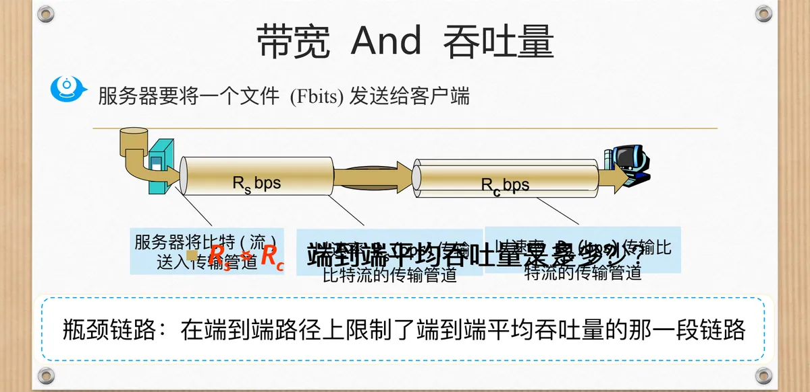
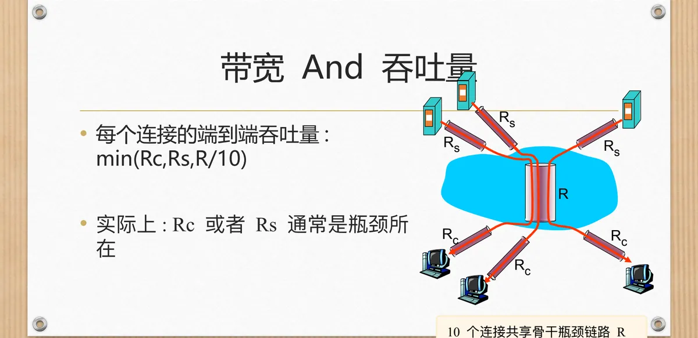
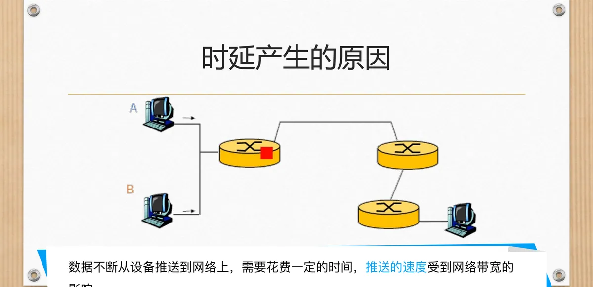
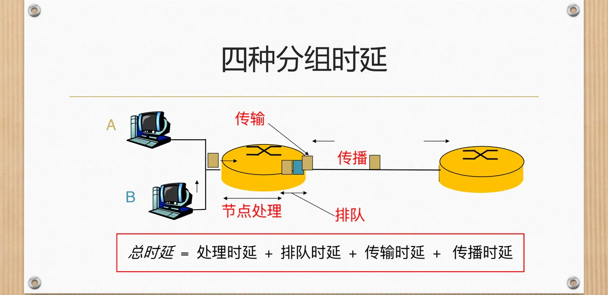

计算机通信与网络 · 第二版讲义 · 第 1 章 计算机网络概述
1.4 计算机网络的评价指标
网络建好之后，凭什么说它「快」还是「慢」？靠的是一组可以度量的评价指标。本节沿着「能力上限—实际表现—时间代价—效率」这条线索展开：先分清速率与带宽，再看吞吐量为什么由瓶颈链路决定，然后拆开时延的四类来源、讨论排队时延与流量强度之间的关系，最后补上时延带宽积、往返时间 RTT 与利用率。这些指标是后面各章分析协议性能时共同的语言。
1. 速率与带宽：一个是比特率，一个是频率范围
最基本的指标是速率（rate）：它指数字信道传送数字信号的速率，也称为比特率（bit rate）或数据率，单位是 b/s（bps），描述信道每秒钟能送出多少个比特。速率的单位按 10 的幂进位（1 kb/s = 103 b/s，1 Mb/s = 106 b/s，1 Gb/s = 109 b/s）；这和数据量单位 KB、MB 按 210 进位不是一套进制，计算时不能混用。
带宽（bandwidth）这个词有两层含义，课件把它们并列摆了出来：
- 信号的带宽指信号所具有的频率范围，单位是「赫（Hz）」；
- 线路的带宽或信道的带宽指通信线路或信道允许通过的信号频率范围。
而数据率则是数字信道传送数字信号的速率，单位是 b/s（bps）。课件在这一组概念旁特意标注了「信道传输的能力」：当人们说「这条线路的带宽是 100 Mb/s」时，指的其实是数据率，即信道传送比特的能力上限，单位并不是 Hz。模拟意义上的带宽量的是频率范围，数字意义上的「带宽」量的是比特率，要按上下文分辨。
2. 吞吐量与瓶颈链路
带宽说的是信道「能」传多快，吞吐量（throughput）说的则是它「实际」传得有多快：信道的吞吐量指信道上发送方与接收方之间实际传输比特的速率（bps）。吞吐量分两种口径：瞬时吞吐量刻画某一时刻的传输速率，平均吞吐量刻画一段时间内的平均水平，日常测速得到的多是后者。
吞吐量永远不会超过路径上最弱的那一段能力。课件用服务器向客户端发送一个文件（F 比特）的例子来说明（图 1）：服务器侧链路速率为 Rs，客户端侧为 Rc。若 Rs < Rc，比特流受 Rs 限制，端到端平均吞吐量就是 Rs；若 Rs > Rc，瓶颈落到接收侧，吞吐量就是 Rc。两种情形合起来即 min(Rs, Rc)，限制它的那一段链路就叫瓶颈链路（bottleneck link）——课件定义是「在端到端路径上限制了端到端平均吞吐量的那一段链路」。

真实的因特网不是一对一的管道，而是许多连接共享骨干链路（图 2）。若 10 个连接共享速率为 R bps 的骨干瓶颈链路，每个连接的端到端吞吐量为 min(Rc, Rs, R/10)。课件还提示了经验判断：实际上 Rc 或者 Rs 通常是瓶颈所在——骨干带宽被 10 个连接平分后，真正卡住用户的往往是他自己的接入链路。

3. 时延：四类来源与总时延
如果说速率和吞吐量刻画的是「能力」，时延（Delay Time）刻画的就是「代价」：它指一个报文或分组从一个网络（或一条链路）的一端传送到另一端所需的时间。
（1）时延从哪里来
课件用时延产生的原因把时间花费拆成了四笔（图 3）：
- 发送时延：数据不断从设备推送到网络上，需要花费一定的时间，推送的速度受到网络带宽的影响；
- 传播时延：数据不断从链路的一端传送到链路的另一端，需要花费一定的时间，传送速度受到电磁波传播速度的影响；
- 处理时延：设备接收数据以及决定往哪转发数据，这些处理需要花费一定的时间，处理时间受设备硬件的影响；
- 排队时延：路由器接收到的数据需要排队，以便按顺序转发，并调节接收与转发速度的不一致，排队时间受设备硬件的影响。

（2）总时延怎么算
把这四笔加起来就是分组在路径上经历的总时延：总时延 = 处理时延 + 排队时延 + 传输时延 + 传播时延（图 4）。这里的「传输时延」就是前面的发送时延，课件在示意图上标注为「传输」，两者是一回事。其中两项有明确的计算式：
- 发送时延 = 分组长度（b）／发送速率（b/s）；
- 传播时延 = 信道长度（m）／电磁波在介质中的传播速率（m/s）。
处理时延不便于计算，它由设备硬件与当前负载决定；排队时延同样与负载密切相关，取决于队列长度和分组的到达情况。

发送时延与传播时延名字相近，物理来源却完全不同：前者是把分组的所有比特推上线路所花的时间，取决于分组长度与发送速率，与链路长短无关；后者是比特在线路上「跑」过去所花的时间，取决于信道长度与电磁波传播速率，与分组大小无关。
（3）排队时延与流量强度
四类时延中，处理时延和传播时延相对稳定，真正随网络负载剧烈变化的是排队时延。课件用三个量来描述它：R 为链路带宽（bps），L 为分组长度（bits），a 为平均分组到达速率，并定义流量强度（traffic intensity）= La/R。其中 La 是平均每秒到达的比特数，R 是链路每秒能发送的比特数，La/R 即「到达速度」与「发送能力」之比。
- La/R 约等于 0：平均排队时延很小，甚至为 0；
- La/R < 1：时延较小，且会随时间推延而变小；
- La/R = 1：时延不会变化，具体数值取决于当时的队列长度；
- La/R > 1：平均时延较大，且随时间推延而趋于无穷；现实情况是缓冲区溢出导致分组丢失。
这组结论把时延和负载挂上了钩：只要到达的比特速率逼近链路的发送能力，排队时延就会迅速膨胀；一旦越过 1，队列排不完，多余的到达只能被丢弃。
4. 时延带宽积与往返时间 RTT
把传播时延和带宽乘起来，得到时延带宽积（bandwidth-delay product）。它衡量链路上能「装下」多少比特：若发送端连续发送数据，则在所发送的第一个比特即将到达终点时，发送端已经发送了时延带宽积个比特。因此链路的时延带宽积又称为以比特为单位的链路长度——它把「链路有多长」从米换算成了在途比特数。
时延只描述单方向花掉的时间。而因特网上的信息往往不是单方向传输，而是双向交互，我们有时很需要知道双向交互一次所需的时间，于是往返时延 RTT（Round-Trip Time）成为重要的性能指标：从发送端发送数据开始，到收到接收端的确认（接收端收到数据后立即发送确认）为止，总共经历的时延。按这个定义，RTT 里装着往返两个方向的传播时延，以及中间结点上的处理、排队和确认分组的发送时延，它衡量「一个来回有多快」，比单向时延更贴近用户对网络响应速度的感受。
5. 利用率：越高越好吗
还有一类指标关心资源被用掉了多少。信道利用率用来表示某信道有百分之几的时间是被利用的（有数据通过）；网络利用率则是全网络的信道利用率的加权平均。
利用率并非越高越好：当某信道的利用率增大时，该信道引起的时延也会迅速增加，这与流量强度的分析相互呼应；但利用率太低，又会让宝贵的通信资源被白白浪费。评价一个网络，要同时看能力和代价。
课件把这一节收在「其它性能指标」上，说明上述几项并不穷尽全部。实际运维中常用到的还有丢包率（packet loss rate），即一定时间范围内传输过程中丢失的分组数量与总分组数量的比率：分组可能因传输中出现误码被结点丢弃，也可能在到达队列已满的分组交换机时被丢弃，因此它往往直接反映网络的拥塞程度。
本节小结
- 速率（比特率、数据率）是数字信道传送比特的速率，单位 b/s；带宽既指信号的频率范围（Hz），也指信道允许通过的频率范围，而「带宽 100 Mb/s」说的是数据率，两种口径不能混。
- 吞吐量是发送方与接收方之间实际传输比特的速率，有瞬时与平均之分；端到端平均吞吐量由瓶颈链路决定，等于路径上各段速率的最小值，如 min(Rs, Rc) 或 min(Rc, Rs, R/10)。
- 总时延 = 处理时延 + 排队时延 + 传输（发送）时延 + 传播时延；发送时延 = 分组长度／发送速率，与链路长短无关，传播时延 = 信道长度／电磁波传播速率，与分组大小无关。
- 排队时延用流量强度 La/R 衡量：接近 0 时几乎不排队，小于 1 时时延较小，等于 1 时取决于队列长度，大于 1 时时延趋于无穷，现实结果是缓冲区溢出、分组丢失。
- 时延带宽积 = 传播时延 × 带宽，等于链路上在途的比特数，又称以比特为单位的链路长度；往返时间 RTT 是从发出数据到收到确认的总时间，衡量双向交互的快慢。
- 利用率分信道利用率与网络利用率，过高会推高时延、过低则浪费资源；丢包率等指标进一步刻画拥塞情况，评价网络要兼顾能力与代价。